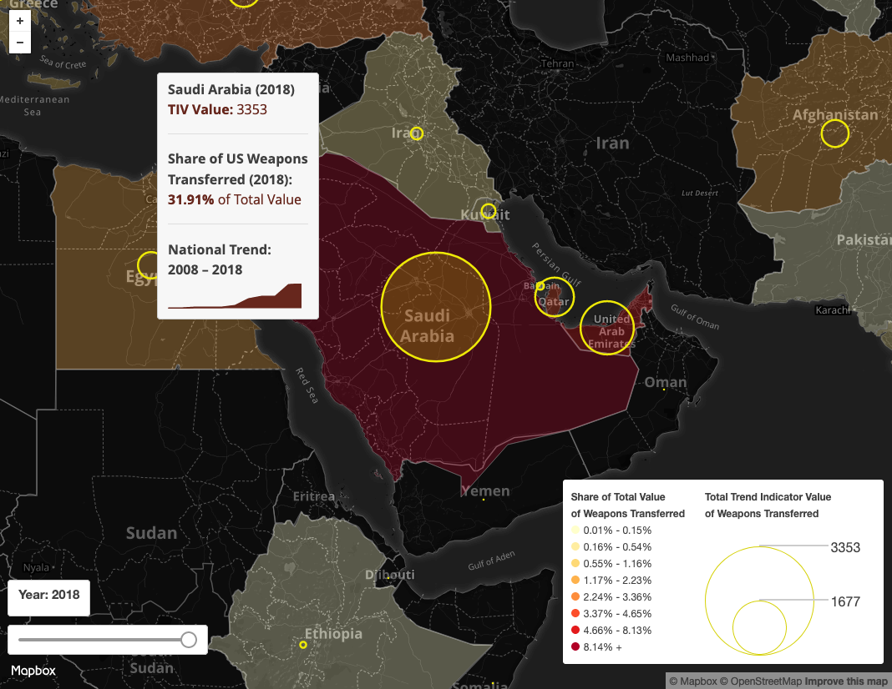
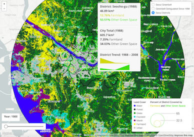
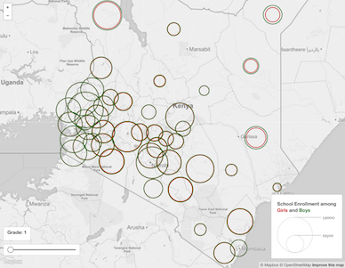
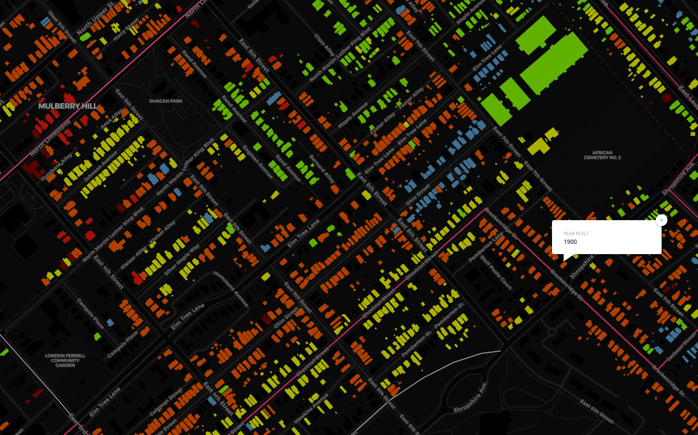

Maps by Jay Bowen
Department of Geography, University of Kentucky

Election Interference by the US: 1946-2000 (In Progress)
This map uses data from Dr. Dov H. Levin's Partisan Electoral Interventions by the Great Powers (PEIG) Dataset. This dataset includes only information on election interventions and does not include US involvement in coups d'état.

US Global Arms Transfers: 2008-2018
This map uses data downloaded from the Stockholm International Peace Research Institute's Arms Transfers Database of Trend Indicator Values (TIV). These values are based on the known unit production costs of a core set of weapons and are intended to allow for a common measurement of arms flow trends between nations over time. This map plots trends in arms transfers from the US to other nations between 2008 and 2018.

Seoul Land Cover Change: 1988-2008
This map features changes in regional land cover for three ten-year intervals spanning 1988 to 2008. It incorporates proportional circles to visualize relative coverage of farmland versus other green space for each district and year. The map also plots the locations of greenbelt deregulation since initiation in 1998.
This map uses open source land cover data from the Korean Ministry of Environment using Landsat TM and Landsat 7 imagery, administrative units from the Seoul Metropolitan Government, and greenbelt data from the Ministry of Land, Infrastructure and Transport. This map plots twenty year trends in urban development and green space between 1988 and 2008.

Gender Equity Success in Kenyan Primary Schools, 2014
The Kenyan government seeks to promote and maintain equal rates of primary school attendance among boys and girls throughout the country. This map visually presents attrition rates of boys and girls as they progress through school, allowing stakeholders to identify regions requiring more attention to gender equality in school enrollment and retention.
The map uses open source data from the government of Kenya regarding enrollment by gender and grade for each county in 2014.

Wind and Hydroelectric Power Plants in the USA
This map features proportional symbolization of the amount of power in megawatts generated by each wind and hydroelectric power plant in the USA by primary power source.
The map was generated in Leaflet with GeoJSON data about US power plants from the EIA's form 923.

Average Rent across the USA, 2015
This map features choropleth symbolization of average rent by county across the USA in 2015.
The map was generated in Leaflet with a GeoJSON data file produced by joining rent data from American FactFinder with US county polygons from the US Census Cartographic Boundary Shapefiles.

Percentage of Adults Lacking Health Insurance by US County, 2015
This map features choropleth symbolization of the percentage of uninsured adults in the United States by county in 2015.
The map was generated in CARTO with a GeoJSON file containing data from the University of Wisconsin and the Robert Wood Johnson Foundation.

Urban Farmland and Gardens by Seoul Neighborhood
This map features graduated choropleth symbolization of the amount of farmland and urban gardens by city neighborhood. It also incorporates proportional symbols to visualize the relative size of registered urban farms and gardens.
The map was generated in Carto with GeoJSON files created from spatial information and shapefiles initially modified in QGIS.

Lexington, KY: Streetcar Lines and Urban Development, 1890-1938
This map features colored symbolization of Lexington streetcar lines built between 1890 and 1938, which were digitized from historic maps in the collections of the University of Kentucky Libraries. It also includes building footprints colorized by year built. This information was gathered from Fayette County PVA data.
The map was generated in Carto with GeoJSON files created from spatial information and shapefiles initially modified in QGIS.